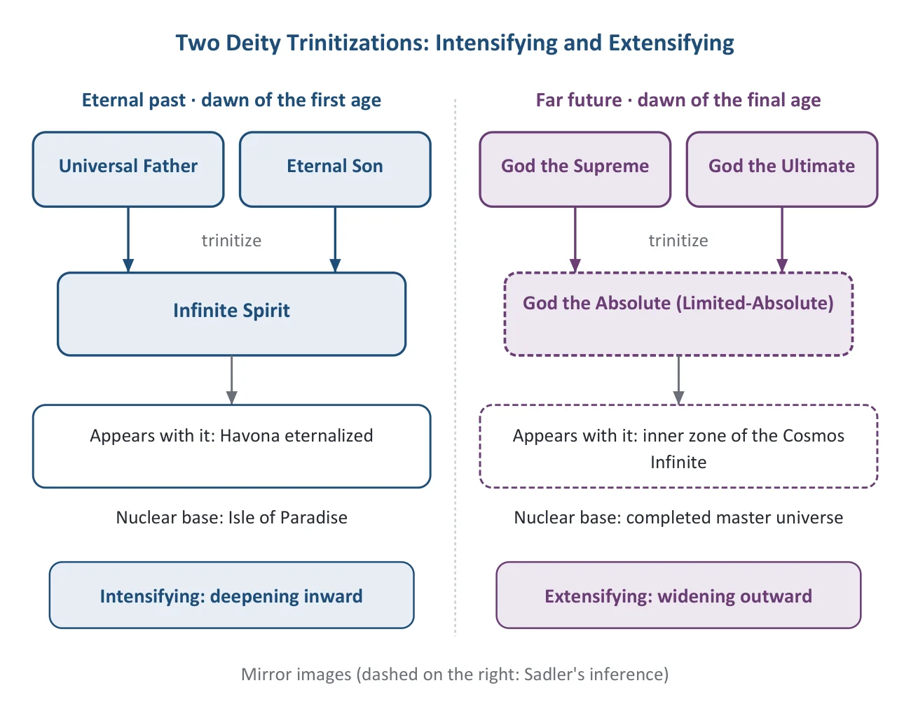

A terceira Trindade experiencial
Original: Apêndice XXIV, A terceira Trindade experiencial (pp. 485–494)
NESTE CAPÍTULO
Sadler trata o segundo nível da Trindade das Trindades como uma trindade genuína por direito próprio, que ele chama de terceira Trindade experiencial. Os seus três membros são o Supremo, o Último e o Absoluto-Limitado; este último é a presença de deidade de Deus, o Absoluto, tal como Ele surgirá por meio da trinitarização. Se a Trindade do Paraíso foi a primeira de todas as trindades, esta é a última. Ela pode ser formada, mas nunca pode ser plenamente unificada, porque a infinitude não pode ser esgotada.
1. A primeira Trindade e a última (orig., pp. 485–486)
Sempre que volta o pensamento para o futuro distante, Sadler gosta de erguer o passado distante como um espelho. Examinar de perto as causas absolutas, acredita ele, fornece um esboço tênue de como podem ser os acontecimentos próximos do destino absoluto. Neste apêndice ele usa mais uma vez a mesma abordagem, agora para examinar a Trindade das Trindades e, sobretudo, o seu segundo nível.
Há muito tempo, na eternidade passada, o Pai Universal uniu-se ao Filho Eterno para trinitarizar o Espírito Infinito e para eternizar o universo central. Com o surgimento da terceira pessoa completou-se o ciclo existencial da personalização da Deidade, e entre as três surgiu a interdependência decisiva de que fala O Livro de Urântia.
E, com a personalização final da Deidade coexistente — o Agente Conjunto —, advém a interdependência trinitária crítica das Três personalidades divinas, no que diz respeito à totalidade de funcionamento da Deidade, no absoluto.10:3.7
Sadler espera que um padrão da mesma forma volte a ocorrer no futuro remoto. Tendo por base um universo-mestre concluído, Deus, o Supremo, e Deus, o Último, trinitarizariam juntos Deus, o Absoluto, e abririam a zona interior do Cosmos Infinito. Começaria então um ciclo de personalização experiencial da Deidade, e surgiria mais uma vez uma interdependência trinitária, desta vez entre três Deidades experienciais.
Os dois acontecimentos assemelham-se, mas movem-se em direções opostas. O primeiro vai do Pai sozinho ao Pai e ao Filho, e depois a todos os três, Pai, Filho e Espírito; Sadler o chama de “intensificador”, um aprofundamento para dentro. O segundo vai do Supremo ao Supremo e ao Último, e daí a um Absoluto mantido dentro de limites; a este ele chama de “extensificador”, uma ampliação para fora. Há também uma diferença fundamental. O Filho origina-se do Pai, ao passo que o Último não se origina diretamente do Supremo.

2. A Trindade das Trindades: o seu segundo nível (orig., pp. 486–487)
Segundo O Livro de Urântia, a Trindade das Trindades tem um primeiro nível composto de três trindades (do Paraíso, Última e Absoluta), enquanto o segundo nível é a associação das três personalidades experienciais da Deidade [106:8.20]. Sadler identifica o ocupante do terceiro lugar desse segundo nível como a presença de deidade de Deus, o Absoluto, surgindo pela trinitarização. Quando as três Deidades experienciais se reúnem, emerge um novo sistema, e nessa emergência ele vê a terceira Trindade experiencial ser formada factualmente. Ele apoia a idéia numa pergunta que a própria revelação faz.
Se o segundo nível da Trindade das Trindades pudesse algum dia atingir a unidade trinitária, o que então sucederia em conseqüência dessa unidade da deidade?106:8.22
Num apêndice anterior (XIX), Sadler propôs que toda trindade experiencial passa por três estágios: realidade qualificada, formação factual e realidade unificada. Sobreposto ao segundo nível, o esquema fica assim. Este nível é uma realidade qualificada desde a abertura da segunda idade do universo, como o atesta Majeston, factualizado nesse nível. Uma vez trinitarizado Deus, o Absoluto, ele pode ser formado factualmente a qualquer momento. Contudo, nunca alcança o terceiro estágio, o da unificação, porque o Absoluto-Limitado não pode esgotar a infinitude.
Semelhante às outras Trindades e, no entanto, diferente delas
Sadler insiste em que não há duas trindades iguais. A terceira Trindade experiencial assemelha-se à Trindade do Paraíso porque é formada por meio de uma trinitarização da Deidade, e assemelha-se à Trindade Absoluta porque nunca pode ser inteiramente unificada. Difere, porém, de todas as outras trindades por ser a única que se encontra dentro de uma trindade maior: uma trindade interna.
3. Os membros da Trindade Final (orig., pp. 488–490)
Sadler conta três membros: a Deidade Suprema funcionando como co-absoluta (ou co-infinita), a Deidade Última com o mesmo status, e a presença de deidade do Absoluto-Limitado trinitarizada pelo Supremo-Último. Nomear o terceiro membro é difícil. “Deus, o Absoluto” sugere uma pessoa, ao passo que o Absoluto da Deidade é um potencial puramente existencial. Por isso ele distingue este membro do Absoluto que não conhece limites e o chama de Absoluto-Limitado.
O Livro de Urântia indica três possibilidades suprafinitas para a manifestação do Ser Supremo no universo. A terceira é esta:
3. A participação co-infinita na Trindade das Trindades; mas não estamos de posse de nenhuma concepção satisfatória sobre o que isso realmente significa.117:7.11
Desta terceira possibilidade Sadler deduz que o Ser Supremo continua crescendo mesmo depois de completada a Sua personalidade. O crescimento não vai além da personalidade; é um crescimento que vem depois de concluída a poder-personalização. Ele aplica o mesmo raciocínio à Deidade Última. Ambas as Deidades experienciais tomam parte na projeção da experiência num campo de expressão criativa exterior ao universo-mestre, e a revelação chama de co-absolutos os que participam dessa obra [106:0.7].
O terceiro membro é mais complexo. Sadler vê esta presença passando por três fases. Primeiro, é uma presença inicial, não maior do que aquilo que o Supremo-Último trinitarizou. Em seguida, torna-se uma presença crescente, que aumenta por meio de uma eterna síntese poder-personalidade. Por fim, se todo processo pudesse completar-se, seria uma hipotética presença final que ligaria experiencialmente os três Absolutos numa só unidade. Como, porém, o potencial infinito dos três Absolutos nunca se esgota, essa terceira fase nunca chega.
4. As funções da Trindade Final (orig., pp. 490–491)
Formar uma trindade não apaga os seus membros. O Pai e o Filho, embora se tenham tornado como um, conservam as suas próprias identidades, e a Trindade do Paraíso não oculta a individualidade das três pessoas nem a possibilidade de acesso a elas. O que muda é o modo de funcionamento da Deidade.
… o Pai não é discernivelmente absoluto, como Deidade total, exceto na Trindade do Paraíso.10:3.8
Sadler espera o mesmo no futuro. Deus, o Supremo, Deus, o Último, e Deus, o Absoluto, poderiam ser contatados individualmente, mas em relação ao universo total agiriam apenas como uma trindade. Ele também suspeita que, assim como Havona foi um universo de origem trinitária que surgiu juntamente com a primeira Trindade, a zona interior do Cosmos Infinito possa ser um universo que surge juntamente com a última. Esta trindade cresce sem fim e continua avançando rumo à unidade, mas nunca se completa. Precisamente porque permanece inacabada, a aventura do universo e dos seus cidadãos nunca encontra uma barreira final.
Aproximar-se do Absoluto Universal versus alcançá-lo
A revelação descreve o Absoluto Universal como de possível acesso experiencial-existencial [0:11.14]. Sadler observa que aproximar-se não é o mesmo que chegar. Visto que a insondabilidade do Absoluto Universal cresce à medida que o universo se expande [10:8.8], a expansão pode ultrapassar a aproximação. (O original cita esta passagem como 0:1.14.)
5. A última tentativa de unificação da Deidade experiencial (orig., pp. 491–494)
No Paraíso e no universo central, a unidade da Deidade é uma existência de fato. Nos universos em evolução, do tempo e do espaço, a unidade da Deidade é uma realização em processamento.56:5.4
A Deidade existencial é eternamente una na Trindade do Paraíso. A unidade da Deidade experiencial, ao contrário, depende dos esforços de todo criador, Deidade e trindade posteriores a Havona. Sadler organiza esses esforços como uma seqüência de tentativas em três níveis.
| Nível | Arena e idade | Deidade e trindade emergentes | Resultado |
|---|---|---|---|
| Primeiro (finito) | Grande universo, segunda idade | Ser Supremo; primeira Trindade experiencial | Emerge quando termina a atividade do nível |
| Segundo (subabsoluto) | Universo-mestre, da segunda à sexta idade | O Último; segunda Trindade experiencial | Emerge quando termina a atividade; a Trindade Absoluta não pode ser unificada |
| Terceiro (absoluto) | Cosmos Infinito, idade final | Deus, o Absoluto; terceira Trindade experiencial | Emerge quando começa a atividade; nunca se completa |
Os dois primeiros níveis são aquilo que a revelação chama de “dois níveis subabsolutos e evolutivos” [0:12.1]. Nesses níveis, uma Deidade e uma trindade emergem quando a obra do nível está concluída. O terceiro nível, ao contrário, não é de modo algum um nível subabsoluto, mas o nível absoluto original a partir do qual os outros dois foram projetados, e aqui a ordem se inverte. Como nem a infinitude nem a eternidade podem ser esgotadas, não há momento em que a obra esteja concluída; por isso a nova Deidade e a nova trindade surgem quando a obra começa. Sadler encontra aqui uma semelhança com a abertura da primeira idade do universo, quando a Deidade igualmente se personalizou no início da idade, e não no seu encerramento.
Os três membros do segundo nível podem assim ser descritos como Deidade evolucionária-experiencial (o Supremo), Deidade transcendental-experiencial (o Último) e Deidade existencial-experiencial (o Absoluto-Limitado). Sadler interpreta esta trindade unificadora, mas nunca unificada, como um esforço final para reunir, por meios experienciais, aquilo que o Infinito outrora dividiu por meios existenciais na eternidade. Aquilo a que o esforço visa, acrescenta ele, não é uma nova Deidade, mas a Deidade original: uma tentativa experiencial de entrar no Infinito.

Pontos-chave
- Sadler considera o segundo nível da Trindade das Trindades uma verdadeira trindade: a terceira Trindade experiencial, ou Trindade Final.
- Os seus três membros são o Supremo, o Último e o Absoluto-Limitado; este último é a presença de deidade de Deus, o Absoluto, uma vez que Ele tenha sido trinitarizado.
- A trinitarização Pai-Filho intensifica a Deidade para dentro; a trinitarização Supremo-Último estende a Deidade para fora.
- Esta trindade pode ser formada, mas nunca unificada, já que a infinitude quantitativa nunca pode ser esgotada.
- Dentro da trindade cada membro conserva a sua individualidade; apenas a função da Deidade em relação ao universo total se une como trindade.
- A unificação da Deidade experiencial é tentada nos níveis finito, subabsoluto e absoluto, e no terceiro nível a Deidade e a trindade surgem no início da atividade.